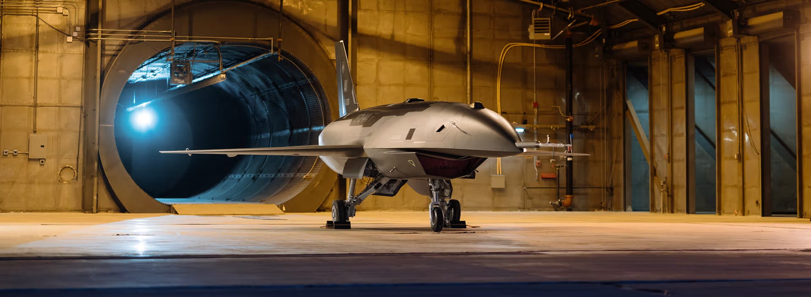
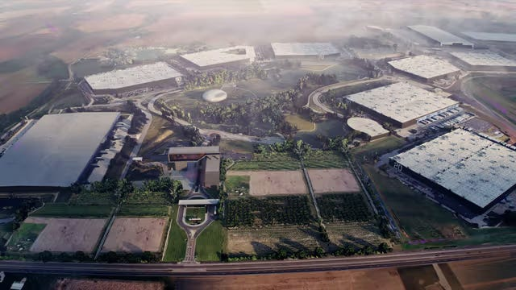
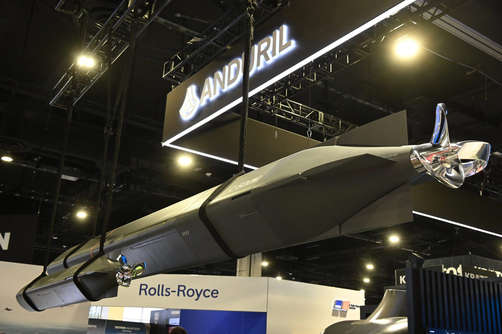
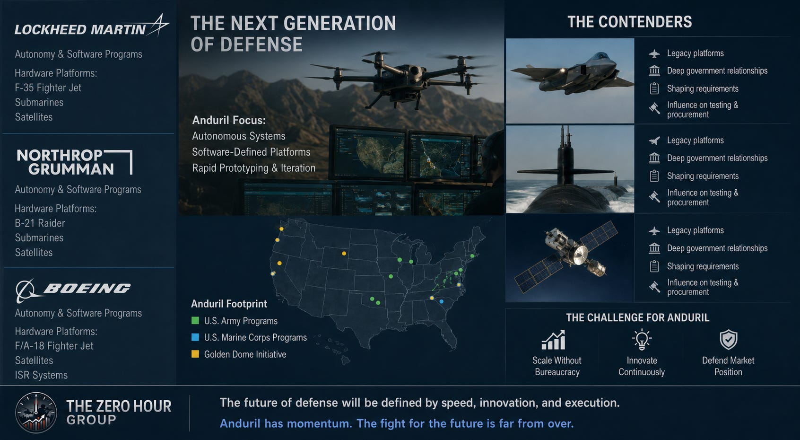

In 9 short years, Anduril went from a 2017 speculative tech startup to a $61 billion defense prime with a $20 billion Army contract, forcing established companies like Lockheed and Northrop to compete on its terms. Anduril doesn’t have a ticker, a quarterly earnings call, or a stock chart to obsess over. It has something legacy defense contractors spent decades failing to build: a private company the Pentagon now treats as a prime. In March 2026, the U.S. Army awarded Anduril a contract worth up to $20 billion over ten years, folding more than 120 separate procurement actions into a single enterprise deal built around the company’s software. Two months earlier, Anduril and Palantir had already begun writing the software backbone for Golden Dome, the $185 billion missile shield the Trump administration ordered built with a final tally that could reach over $1.2 trillion over the next 20 years. In May 2026, investors valued Anduril at $61 billion, more than double the $30.5 billion mark it carried eleven months earlier. Nine years after five founders incorporated the company out of a Costa Mesa office, Anduril has become the clearest test of whether Silicon Valley’s build-first, sell-later model can replace the cost-plus contracts that built the F-35 and the Zumwalt-class destroyer.
From Oculus Money to a $61 Billion Company
Palmer Luckey met Trae Stephens in June 2014 at a Founders Fund retreat on Sonora Island, British Columbia. Stephens had just left Palantir for Peter Thiel’s venture fund and wanted to back a defense startup built like a tech company instead of a contractor. Luckey had sold Oculus VR to Facebook for $2 billion and left the company in March 2017, saying he had been pushed out over his political donations, a claim Facebook denied. The two incorporated Anduril on April 20, 2017, alongside co-founders Matt Grimm, Joe Chen, and Brian Schimpf, with Founders Fund seeding the company. The idea: skip the government-funded R&D cycle, build hardware and software with private capital, then sell finished systems to the Pentagon the way Apple sells an iPhone.
The bet has compounded fast. Anduril raised $2.5 billion in a June 2025 Series G that valued the company at $30.5 billion, anchored by a $1 billion check from Founders Fund, the largest single investment in that firm’s history. Eleven months later, in May 2026, Anduril closed a $5 billion Series H led by returning investors Thrive Capital and Andreessen Horowitz at a $61 billion valuation, pushing total capital raised past $11 billion. Revenue doubled to $2.2 billion in 2025, and the company is projecting $4.3 billion for 2026. Schimpf, a co-founder who runs day-to-day operations as CEO while Luckey holds the public-facing chairman role, now oversees a workforce that has passed 8,000 employees and has roughly doubled headcount each of the past several years.
Golden Dome, the Army, and the Marine Corps
Anduril’s contract list reads like a map of where the Pentagon is placing its biggest bets. In January 2025, Anduril and Palantir joined an industry consortium building command-and-control software for Golden Dome, after President Trump signed an executive order to advance the program early in his second term. By November 2025, the Space Force had opened a competitive prototype phase and awarded Anduril $10 million to develop space-based interceptors. Between late 2025 and early 2026, that work expanded into 20 Other Transaction Authority agreements worth up to $3.2 billion across 12 companies, with Anduril leading an interceptor team that includes Impulse Space, Inversion Space, K2 Space, Voyager Technologies, and Sandia National Laboratories.
The Army deal dwarfs even that. The $20 billion, ten-year contract awarded in March 2026 combines Anduril’s hardware, software, and services into a single mission-ready ecosystem, replacing the tangle of individual task orders the Army had used to buy Anduril equipment piecemeal. In June 2026, the Army went further, naming Anduril to lead the common data layer for its Next Generation Command and Control program, the first major award of that effort, a role that effectively supplants pieces of Northrop Grumman’s long-standing FAAD C2 air-defense software. The Marine Corps has built its own relationship with the company: a $642 million, ten-year program of record for installation counter-drone systems, layered on top of an earlier $200 million contract to build counter-UAS technology for the Marine Air Defense Integrated System. Both counter-drone deals run on Lattice, the same software backbone the Army and Golden Dome programs use.
Lattice, Fury, and the Arsenal-1 Systems Shaping The Moat

Every one of those contracts sells the same core product: Lattice, Anduril’s AI software that lets sensors, drones, and weapons share data and act as one networked system under human supervision. Everything else the company builds plugs into it. Fury, an autonomous jet designed to fly alongside F-35s and the future F-47, completed its first semi-autonomous flight in February 2026 using Lattice’s mission-autonomy system. Roadrunner is a reusable, twin-turbojet interceptor that takes off vertically and rams or shoots down enemy drones and cruise missiles. Pulsar is a family of AI-driven electronic warfare units built to reprogram themselves against new jamming threats in hours instead of the months a traditional refresh takes. Barracuda is a family of low-cost autonomous air vehicles built to be produced by the thousand instead of handled as one-off, exquisite systems.
Building all of it in volume required a factory Anduril didn’t have. The company is spending close to $1 billion on Arsenal-1, a 5-million-square-foot plant in Pickaway County, Ohio, pictured above, projected to employ more than 4,000 people by 2035. Production started in March 2026, ahead of the July 2026 target Anduril set when it broke ground, and the plant is set to be running Fury, Roadrunner, Barracuda, and a fourth, classified platform by the end of this year. That same March, Anduril acquired ExoAnalytic Solutions, adding a 400-telescope space-tracking network that lets the company bid directly against Lockheed and Northrop for Space Force domain-awareness work instead of subcontracting under them.
The Undersea Layer: Dive-XL, Ghost Shark, and Seabed Sentry

Anduril’s Seapower line runs the same Lattice software that flies Fury and Barracuda, pointed instead at submarines, seabed sensors, and surface ships. The Navy has bought into that stack at scale: Dive-XL and Ghost Shark carry a real field record, and DIU picked Anduril to build the Navy’s next class of extra-large autonomous submarines.
Dive-LD is the smaller of Anduril’s two autonomous undersea vehicles. The Navy has trained crews on it out of Keyport, Washington since late 2024. Dive-XL is the extra-large version, built to travel over 1,000 nautical miles and dive past 200 meters unsupported. Anduril’s undersea fleet has logged more than 42,000 kilometers and 6,750 hours in the water, including the longest endurance run any XL-AUV has completed. The Defense Innovation Unit and the Navy cited that record when they selected Anduril in March 2026 for the Combat Autonomous Maritime Platform program, which will field Dive-XL at scale.
Ghost Shark is the Australian variant of that same XL-AUV. Anduril built it with Australia’s Defence Science and Technology Group under an A$1.7 billion program of record, and the Royal Australian Navy took delivery of its first operational unit in January 2026. More than forty Australian suppliers fed components into the new Sydney facility that builds it, and that site now produces Dive-LD and the newer Copperhead line too.
Copperhead is Anduril’s undersea weapon line, built in 100 and 500M variants to replace scarce, crewed strike platforms with cheaper vehicles launched from unmanned carriers. Anduril released footage in April 2026 of the Copperhead-500M breaking its internal speed record during sea trials.
Seabed Sentry is the sensing layer underneath the vehicles: AI nodes that sit on the ocean floor for months or years, watch for submarines and surface ships, and surface only the data that matters. Anduril built it to replace Cold War-era fixed hydrophone networks like SOSUS at a fraction of the cost, and Dive-XL vehicles drop the nodes into place.
Anduril and HD Hyundai are building autonomous surface vessels together too. The first one hits the water this year, and Anduril takes ownership for U.S. coastal testing by the end of 2026. Between the surface ships, Copperhead, Dive-XL, and Seabed Sentry, Anduril now runs sensors and strike vehicles below the surface and ships above it, all on the same software that flies its aircraft. The maritime stack follows the same playbook as Arsenal-1: build the whole system once, then sell it to every branch and every allied navy that needs it.
Primes vs. Insurgents

Luckey has said plainly that cost-plus contracting doesn’t work for software, computer vision, or AI, and that it punishes contractors for finishing early instead of rewarding them. Anduril’s model inverts the arrangement: spend venture capital to build a finished product in two to three years, then sell it off the shelf, instead of taking ten to fifteen years and a cost-plus fee to develop something from scratch on the government’s dime. The Army’s decision to hand Anduril the NGC2 data layer job, a role Northrop had effectively held through FAAD C2, is the clearest evidence yet that the Pentagon will let a nine-year-old company take work from a contractor that has built its air-defense systems for decades.
Lockheed Martin, Northrop Grumman, and Boeing aren’t standing still. Each has launched its own autonomy and software programs, and each still controls hardware platforms, fighter jets, submarines, satellites, that Anduril can’t replicate overnight. Legacy primes can also shape requirements, sit on testing boards, and file protests that slow down upstart awards, leverage Anduril doesn’t have in reverse. The fight over who builds the next generation of weapons systems is playing out in real time, and Anduril’s footprint at the Army, the Marine Corps, and Golden Dome answers part of the question. Whether the company can hold that ground as it grows, without turning into the kind of institution it set out to replace, is still open.
What to Watch Moving Forward
IPO timing and valuation risk. CEO Brian Schimpf told CNBC on July 9, 2026 that Anduril isn’t in a rush to go public, calling a listing in the “middle of a hype cycle” a mistake. No S-1 has been filed and no underwriters named. A $61 billion private valuation with no public financial disclosure leaves outside observers dependent on company statements and secondary-market pricing until that changes.
Hardware margins at scale. Anduril built its reputation on software economics, but Arsenal-1 commits the company to manufacturing missiles, drones, and munitions by the thousand. Ramping a 5-million-square-foot factory from a March 2026 start to full production of four separate platforms by year-end is a manufacturing bet, not a software one, and manufacturing bets are where cost overruns typically surface first.
Prime contractor pushback. Lockheed, Northrop, and Boeing hold decades of relationships inside the Pentagon and the tools, requirement-setting, testing authority, contract protests, to slow down a company that just displaced Northrop’s own C2 software on the Army’s biggest recent award. How much of Anduril’s contract pipeline survives that pushback over the next two to three years will say a lot about how durable this shift really is.
Sources
Anduril Secures $2.5B in Funding, Doubling Valuation to $30.5B | FNEX
SpaceX, Anduril among companies to win Golden Dome contracts | Fortune
Anduril, Palantir Help Advance Golden Dome Software | GovConWire
Startups Gain Foothold in U.S. Missile Defense with Golden Dome Awards | GovExec Space Project
Army taps Anduril as lead for NGC2 common data layer baseline | DefenseScoop
US Army announces contract with Anduril worth up to $20B | TechCrunch
Army awards Anduril up to $20B contract for unified tech procurement | Army Technology
Facebook Made This 29-Year-Old Rich; War Made Him A Billionaire | Forbes
Anduril chooses Ohio for $1B manufacturing facility | Manufacturing Dive
Anduril CEO says it’s bad to IPO in ‘middle of a hype cycle’ | CNBC
Anduril’s Luckey seeks to break the Pentagon’s cost-plus contracting model | Janes
Inside Anduril: Meet the quiet engineer-CEO building America’s $61 billion weapons startup | Fortune